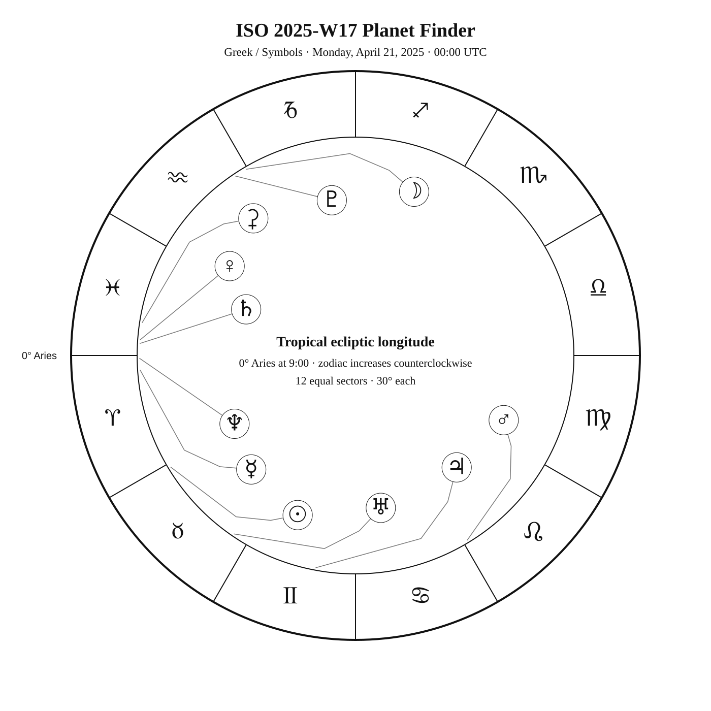
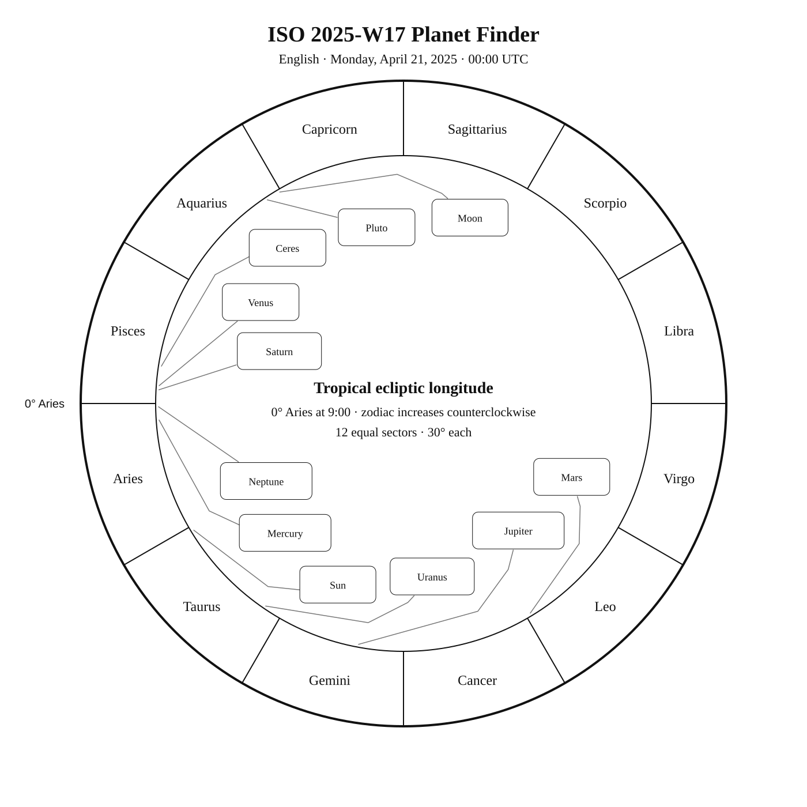
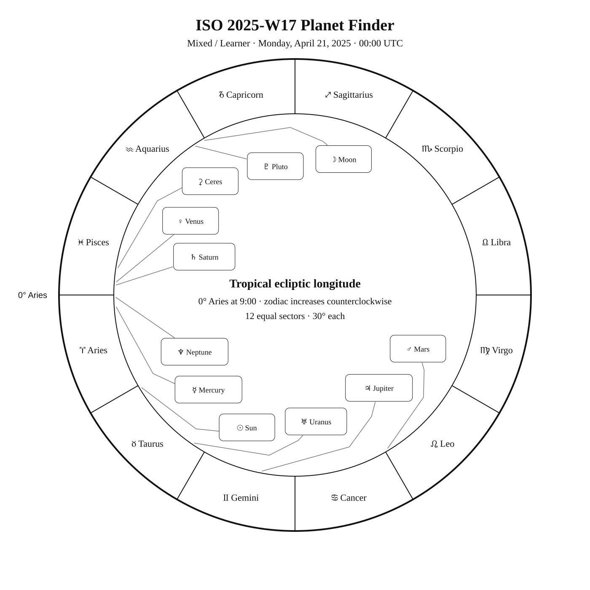

ISO 2025-W17
Week begins: Monday, April 21, 2025
Calendar
| Date | Zodiac day | Events |
|---|---|---|
| Mon, Apr 21, 2025 | ♉ 3 | 🌗 Last Quarter — 01:35:34 UTC Wolf 359 (CN Leonis) —  — Tropical Spring — Tropical Spring |
| Tue, Apr 22, 2025 | ♉ 4 | Alkes (α Crt) —  4 4.1 — Tropical Spring 4 4.1 — Tropical Spring |
| Wed, Apr 23, 2025 | ♉ 5 | Merak (β UMa) —  2 2.3 — Northern Spring 2 2.3 — Northern SpringLalande 21185 (Gliese 411) — — Northern SpringDubhe (α UMa) — 2 1.8 — Northern Spring |
| Thu, Apr 24, 2025 | ♉ 6 | Finest NGC 56 / NGC 3521 · MCG 0-28-30 — 10 9.9 — Tropical SpringC91 / NGC 3532 — 3 3.0 — Southern Spring |
| Fri, Apr 25, 2025 | ♉ 7 | M108 — 10 10.0 — Northern Springβ Crt — 4 4.5 — Tropical Spring |
| Sat, Apr 26, 2025 | ♉ 8 | M97 — 10 9.9 — Northern Spring |
| Sun, Apr 27, 2025 | ♉ 9 | 🌑 New Moon — 19:31:09 UTC Finest NGC 57 / NGC 3607 · MCG 3-29-20 — 11 10.9 — Tropical SpringM65 — 9 9.3 — Tropical SpringC40 / NGC 3626 — 11 10.9 — Tropical SpringM66 — 9 8.9 — Tropical SpringFinest NGC 58 / NGC 3628 · Arp 317 — 10 10.0 — Tropical Spring |
Weekly Solar-System Ephemeris
Snapshot: Week begins April 21, 2025, 00:00 UTC.
(-90° to +90°; defaults +45°, 21:00 LAT)
| Body | ☉︎ | ☽︎ | ☿︎ | ♀︎ | ♂︎ | ♃︎ | ♄︎ |
|---|---|---|---|---|---|---|---|
| Ecliptic | ♉︎ 1°09′ β −0°00′ | ♒︎ 0°21′ β −4°21′ | ♈︎ 3°52′ β −2°25′ | ♓︎ 25°49′ β +2°56′ | ♌︎ 1°11′ β +2°12′ | ♊︎ 19°26′ β −0°16′ | ♓︎ 26°48′ β −1°59′ |
| Observing |  | -10.1 | 0.5 | -4.8 | 0.8 | -2.0 | 1.2 |
| Rise | 05:07 | 02:02 | 04:22 | 03:37 | 10:40 | 07:35 | 04:05 |
| Set | 18:53 | 10:34 | 16:22 | 15:51 | 01:59 | 23:01 | 15:46 |
Extended targets:
| Body | ⚳︎ | ♅︎ | ♆︎ | ♇︎ |
|---|---|---|---|---|
| Ecliptic | ♓︎ 21°14′ β −8°24′ | ♉︎ 25°46′ β −0°13′ | ♈︎ 0°46′ β −1°16′ | ♒︎ 3°46′ β −3°31′ |
| Observing | 9.3 | 5.8 | 7.8 | 14.5 |
| Rise | 04:28 | 06:14 | 04:10 | 02:07 |
| Set | 15:02 | 21:02 | 16:08 | 10:56 |
β = ecliptic latitude (+ north, − south).
Rise and set are Local Apparent Time for the selected latitude.
Naked-eye observing uses the Sun’s altitude at the selected Monday observer time: Daylight (Sun ≥ −0.833°), Civil twilight (−0.833° to −6°), Nautical twilight (−6° to −12°), Astronomical twilight (−12° to −18°), and Night (below −18°).
Solar Glare identifies a body too close to the Sun when the sky-state rule does not already supersede its naked-eye classification.
The Sun’s observing status uses this same five-state sky classification.
Planet Finder



Sky Notes
Kilroy: Sky Notes · generated 2026-10-23 08:14:14 UTC
ISO 2025-W17 runs from April 21 through April 27. Venus and Saturn are separated by about 1.0° in geocentric ecliptic longitude at the Monday 00:00 UTC snapshot. Jupiter is about 3.1° in ecliptic longitude from Elnath in Taurus.


Naked eye: 🌗 Last Quarter — 01:35:34 UTC. Moderate moonlight makes timing and local sky position important for faint targets. Use Merak, Dubhe as the week’s fixed-sky framework.
Planets: Moon: Naked eye; magnitude -10.1; direct motion; 50.8% illuminated. Below the horizon at 21:00 local apparent solar time, 45°N. Monday 00:00 UTC snapshot. Solar conjunction in ecliptic longitude Apr 27 19:31 UTC. Conjunction with Mercury in ecliptic longitude Apr 25 22:04 UTC. Conjunction with Venus in ecliptic longitude Apr 25 02:57 UTC. Conjunction with Ceres in ecliptic longitude Apr 24 19:15 UTC. Conjunction with Saturn in ecliptic longitude Apr 25 02:53 UTC. Conjunction with Neptune in ecliptic longitude Apr 25 08:53 UTC. Conjunction with Pluto in ecliptic longitude Apr 21 06:19 UTC. Mercury: Naked eye; magnitude 0.5; direct motion; 44.3% illuminated. Below the horizon at 21:00 local apparent solar time, 45°N. Monday 00:00 UTC snapshot. Conjunction with Moon in ecliptic longitude Apr 25 22:04 UTC. Venus: Naked eye; magnitude -4.8; direct motion; 20.3% illuminated. Below the horizon at 21:00 local apparent solar time, 45°N. Monday 00:00 UTC snapshot. Conjunction with Moon in ecliptic longitude Apr 25 02:57 UTC. Conjunction with Saturn in ecliptic longitude Apr 25 00:01 UTC. Mars: Naked eye; magnitude 0.8; direct motion; 89.9% illuminated. Monday 00:00 UTC snapshot. Ceres: Telescope; magnitude 9.3; direct motion; 98.8% illuminated. Below the horizon at 21:00 local apparent solar time, 45°N. Monday 00:00 UTC snapshot. Conjunction with Moon in ecliptic longitude Apr 24 19:15 UTC. Jupiter: Naked eye; magnitude -2.0; direct motion; 99.5% illuminated. Monday 00:00 UTC snapshot. Saturn: Naked eye; magnitude 1.2; direct motion; 99.9% illuminated. Below the horizon at 21:00 local apparent solar time, 45°N. Monday 00:00 UTC snapshot. Conjunction with Moon in ecliptic longitude Apr 25 02:53 UTC. Conjunction with Venus in ecliptic longitude Apr 25 00:01 UTC. Uranus: Binoculars; magnitude 5.8; direct motion; 100.0% illuminated. Below the horizon at 21:00 local apparent solar time, 45°N. Monday 00:00 UTC snapshot. Neptune: Telescope; magnitude 7.8; direct motion; 100.0% illuminated. Below the horizon at 21:00 local apparent solar time, 45°N. Monday 00:00 UTC snapshot. Conjunction with Moon in ecliptic longitude Apr 25 08:53 UTC. Pluto: Substantial telescope; magnitude 14.5; direct motion; 100.0% illuminated. Below the horizon at 21:00 local apparent solar time, 45°N. Monday 00:00 UTC snapshot. Conjunction with Moon in ecliptic longitude Apr 21 06:19 UTC.


Binoculars: Trace Crater’s charted figure in the finder, then identify Alkes at its charted position. Trace Crater’s charted figure in the finder, then identify β Crt at its charted position.
Small telescope: MCG 0-28-30: consult its dedicated finder and observing story for equipment guidance; NGC 3532: consult its dedicated finder and observing story for equipment guidance; M108: consult its dedicated finder and observing story for equipment guidance; Owl Nebula: consult its dedicated finder and observing story for equipment guidance; MCG 3-29-20: consult its dedicated finder and observing story for equipment guidance; M65: consult its dedicated finder and observing story for equipment guidance; NGC 3626: consult its dedicated finder and observing story for equipment guidance; M66: consult its dedicated finder and observing story for equipment guidance; Arp 317: consult its dedicated finder and observing story for equipment guidance
Substantial telescope: No fixed-sky Calendar object is classified as requiring a substantial telescope this week.
Other objects listed this week: None
Mercury
Mercury: naked eye at the Monday 00:00 UTC snapshot. At 45°N and 21:00 local apparent solar time, it is 42.3° below the horizon. Rises 04:22; sets 16:22 (45°N, local apparent solar time). Visual magnitude 0.5. The disk is 44.3% illuminated (crescent). It is 27.4° from the Sun, on its west side. Motion is direct at 0.945° per day in ecliptic longitude at the snapshot. Position reference: Diphda, 18.4° away. Neptune is 3.3° away at the snapshot. Conjunction with Moon in ecliptic longitude Apr 25 22:04 UTC. Mercury: 18.4° from Diphda in the Pathfinder.
Venus
Venus: naked eye at the Monday 00:00 UTC snapshot. At 45°N and 21:00 local apparent solar time, it is 43.1° below the horizon. Rises 03:37; sets 15:51 (45°N, local apparent solar time). Visual magnitude -4.8. The disk is 20.3% illuminated (crescent). It is 35.4° from the Sun, on its west side. Motion is direct at 0.290° per day in ecliptic longitude at the snapshot. Position reference: Fumalsamakah, 9.2° away. Conjunction with Moon in ecliptic longitude Apr 25 02:57 UTC. Conjunction with Saturn in ecliptic longitude Apr 25 00:01 UTC. Venus: 9.2° from Fumalsamakah in the Pathfinder.
Moon
Moon: naked eye at the Monday 00:00 UTC snapshot. At 45°N and 21:00 local apparent solar time, it is 51.4° below the horizon. Rises 02:02; sets 10:34 (45°N, local apparent solar time). Visual magnitude -10.1. The disk is 50.8% illuminated (waning half-lit). It is 90.8° from the Sun, on its west side. Motion is direct at 12.969° per day in ecliptic longitude at the snapshot. Position reference: Dabih, 9.8° away. Pluto is 3.5° away at the snapshot. Solar conjunction in ecliptic longitude Apr 27 19:31 UTC. Conjunction with Mercury in ecliptic longitude Apr 25 22:04 UTC. Conjunction with Venus in ecliptic longitude Apr 25 02:57 UTC. Conjunction with Ceres in ecliptic longitude Apr 24 19:15 UTC. Conjunction with Saturn in ecliptic longitude Apr 25 02:53 UTC. Conjunction with Neptune in ecliptic longitude Apr 25 08:53 UTC. Conjunction with Pluto in ecliptic longitude Apr 21 06:19 UTC. Moon: 9.8° from Dabih in the Pathfinder.
Mars
Mars: naked eye at the Monday 00:00 UTC snapshot. At 45°N and 21:00 local apparent solar time, it is 50.1° above the horizon. Rises 10:40; sets 01:59 (45°N, local apparent solar time). Visual magnitude 0.8. The disk is 89.9% illuminated (gibbous). It is 90.0° from the Sun, on its east side. Motion is direct at 0.423° per day in ecliptic longitude at the snapshot. Position reference: Pollux, 8.8° away. Mars: 8.8° from Pollux in the Pathfinder.
Jupiter
Jupiter: naked eye at the Monday 00:00 UTC snapshot. At 45°N and 21:00 local apparent solar time, it is 18.9° above the horizon. Rises 07:35; sets 23:01 (45°N, local apparent solar time). Visual magnitude -2.0. The disk is 99.5% illuminated (nearly full). It is 48.3° from the Sun, on its east side. Motion is direct at 0.188° per day in ecliptic longitude at the snapshot. Position reference: Elnath, 6.6° away. Jupiter: 6.6° from Elnath in the Pathfinder.
Saturn
Saturn: naked eye at the Monday 00:00 UTC snapshot. At 45°N and 21:00 local apparent solar time, it is 46.5° below the horizon. Rises 04:05; sets 15:46 (45°N, local apparent solar time). Visual magnitude 1.2. The disk is 99.9% illuminated (nearly full). It is 34.4° from the Sun, on its west side. Motion is direct at 0.109° per day in ecliptic longitude at the snapshot. Position reference: Fumalsamakah, 13.5° away. Neptune is 4.0° away at the snapshot. Conjunction with Moon in ecliptic longitude Apr 25 02:53 UTC. Conjunction with Venus in ecliptic longitude Apr 25 00:01 UTC. Saturn: 13.5° from Fumalsamakah in the Pathfinder.
Uranus
Uranus: binoculars at the Monday 00:00 UTC snapshot. At 45°N and 21:00 local apparent solar time, it is 0.3° below the horizon. Rises 06:14; sets 21:02 (45°N, local apparent solar time). Visual magnitude 5.8. The disk is 100.0% illuminated (nearly full). It is 24.6° from the Sun, on its east side. Motion is direct at 0.054° per day in ecliptic longitude at the snapshot. Position reference: Aldebaran, 15.3° away. Uranus: 15.3° from Aldebaran in the Pathfinder.
Neptune
Neptune: telescope at the Monday 00:00 UTC snapshot. At 45°N and 21:00 local apparent solar time, it is 43.4° below the horizon. Rises 04:10; sets 16:08 (45°N, local apparent solar time). Visual magnitude 7.8. The disk is 100.0% illuminated (nearly full). It is 30.4° from the Sun, on its west side. Motion is direct at 0.034° per day in ecliptic longitude at the snapshot. Position reference: Fumalsamakah, 15.7° away. Mercury is 3.3° away at the snapshot. Saturn is 4.0° away at the snapshot. Conjunction with Moon in ecliptic longitude Apr 25 08:53 UTC. Neptune: 15.7° from Fumalsamakah in the Pathfinder.
Ceres
Ceres: telescope at the Monday 00:00 UTC snapshot. At 45°N and 21:00 local apparent solar time, it is 55.0° below the horizon. Rises 04:28; sets 15:02 (45°N, local apparent solar time). Visual magnitude 9.3. The disk is 98.8% illuminated (gibbous). It is 40.6° from the Sun, on its west side. Motion is direct at 0.357° per day in ecliptic longitude at the snapshot. Position reference: Diphda, 16.8° away. Conjunction with Moon in ecliptic longitude Apr 24 19:15 UTC. Ceres: 16.8° from Diphda in the Pathfinder.
Pluto
Pluto: substantial telescope at the Monday 00:00 UTC snapshot. At 45°N and 21:00 local apparent solar time, it is 52.6° below the horizon. Rises 02:07; sets 10:56 (45°N, local apparent solar time). Visual magnitude 14.5. The disk is 100.0% illuminated (nearly full). It is 87.4° from the Sun, on its west side. Motion is direct at 0.006° per day in ecliptic longitude at the snapshot. Position reference: Dabih, 8.1° away. Moon is 3.5° away at the snapshot. Conjunction with Moon in ecliptic longitude Apr 21 06:19 UTC. Pluto: 8.1° from Dabih in the Pathfinder.
Highlights
Mercury
Naked eye; magnitude 0.5; direct motion; 44.3% illuminated. Below the horizon at 21:00 local apparent solar time, 45°N. Monday 00:00 UTC snapshot. Conjunction with Moon in ecliptic longitude Apr 25 22:04 UTC. Mercury: 18.4° from Diphda in the Pathfinder.
Venus
Naked eye; magnitude -4.8; direct motion; 20.3% illuminated. Below the horizon at 21:00 local apparent solar time, 45°N. Monday 00:00 UTC snapshot. Conjunction with Moon in ecliptic longitude Apr 25 02:57 UTC. Conjunction with Saturn in ecliptic longitude Apr 25 00:01 UTC. Venus: 9.2° from Fumalsamakah in the Pathfinder.
Moon
Naked eye; magnitude -10.1; direct motion; 50.8% illuminated. Below the horizon at 21:00 local apparent solar time, 45°N. Monday 00:00 UTC snapshot. Solar conjunction in ecliptic longitude Apr 27 19:31 UTC. Conjunction with Mercury in ecliptic longitude Apr 25 22:04 UTC. Conjunction with Venus in ecliptic longitude Apr 25 02:57 UTC. Conjunction with Ceres in ecliptic longitude Apr 24 19:15 UTC. Conjunction with Saturn in ecliptic longitude Apr 25 02:53 UTC. Conjunction with Neptune in ecliptic longitude Apr 25 08:53 UTC. Conjunction with Pluto in ecliptic longitude Apr 21 06:19 UTC. Moon: 9.8° from Dabih in the Pathfinder.
Mars
Naked eye; magnitude 0.8; direct motion; 89.9% illuminated. Monday 00:00 UTC snapshot. Mars: 8.8° from Pollux in the Pathfinder.
Jupiter
Naked eye; magnitude -2.0; direct motion; 99.5% illuminated. Monday 00:00 UTC snapshot. Jupiter: 6.6° from Elnath in the Pathfinder.
Saturn
Naked eye; magnitude 1.2; direct motion; 99.9% illuminated. Below the horizon at 21:00 local apparent solar time, 45°N. Monday 00:00 UTC snapshot. Conjunction with Moon in ecliptic longitude Apr 25 02:53 UTC. Conjunction with Venus in ecliptic longitude Apr 25 00:01 UTC. Saturn: 13.5° from Fumalsamakah in the Pathfinder.
Uranus
Binoculars; magnitude 5.8; direct motion; 100.0% illuminated. Below the horizon at 21:00 local apparent solar time, 45°N. Monday 00:00 UTC snapshot. Uranus: 15.3° from Aldebaran in the Pathfinder.
Neptune
Telescope; magnitude 7.8; direct motion; 100.0% illuminated. Below the horizon at 21:00 local apparent solar time, 45°N. Monday 00:00 UTC snapshot. Conjunction with Moon in ecliptic longitude Apr 25 08:53 UTC. Neptune: 15.7° from Fumalsamakah in the Pathfinder.
Ceres
Telescope; magnitude 9.3; direct motion; 98.8% illuminated. Below the horizon at 21:00 local apparent solar time, 45°N. Monday 00:00 UTC snapshot. Conjunction with Moon in ecliptic longitude Apr 24 19:15 UTC. Ceres: 16.8° from Diphda in the Pathfinder.
Pluto
Substantial telescope; magnitude 14.5; direct motion; 100.0% illuminated. Below the horizon at 21:00 local apparent solar time, 45°N. Monday 00:00 UTC snapshot. Conjunction with Moon in ecliptic longitude Apr 21 06:19 UTC. Pluto: 8.1° from Dabih in the Pathfinder.